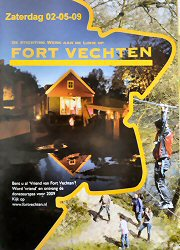
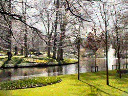
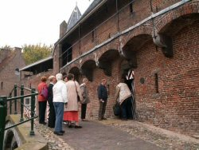
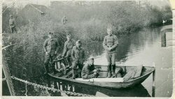
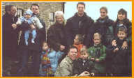
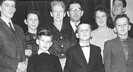
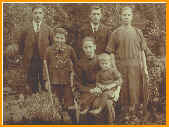
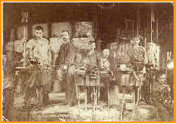

|
Met Vrienden van Oud Leerdam 02-05-09 naar Fort-Vechten >>> |
 | |
|  | <<< Keukenhof 2009 | |
| Oma 70jr, Diergaarde Blijdorp, 2008 >>> |
 |
|
|
Fam.
Roepman 1960 |
||
| Nog enkele fotoalbums bij ZOOM.nl >>> |
 |
|
|  | <<< Met Vrienden van Oud-Leerdam nr Amersfoort, 14-10-06 | |
| >>> | op het voetbalveld! | |
|  | <<< Fort Vechten, André Pelgrim sr. | |
|
Gezin van
Jan Pelgrim &
Elly-Roepman
3 zoons, toen 2 schoondochters (nu 3) en 6 (nu 9) prachtige kleinkinderen, hier tijdens een vrij weekend op Ameland, december 1999 >>> |
 | |
|  |
André
Pelgrim & Wilhelmina-Meijvogel plus de 7 kinderen, Schiedam ± 1962. <<< |
|
| Het gezin Jan Pelgrim &
Marrigje
de Jong, ± 1932 in het Sterrebos te Schiedam >>> |
 | |
|  |
Eén van de laatste glasblazers, grootvader Jan Pelgrim (linksboven, met sigaar). Glasfabriek te Schiedam dd dinsdag 14 mei 1907. <<< |
|
Hierna nog enkele grotere foto's:
| Pelgrim | gezin Pelgrim-de Jong | foto dir.glasfabriek | foto gezin Pelgrim-vd Hoek | |||||||||
| Meijvogel | huis/gezin te IJsselstein | |||||||||||
| Roepman | ||||||||||||
| Mooij | ||||||||||||
| Kuijpers | foto Kuijpers |
(Wie heeft nog bijzondere exemplaren??)